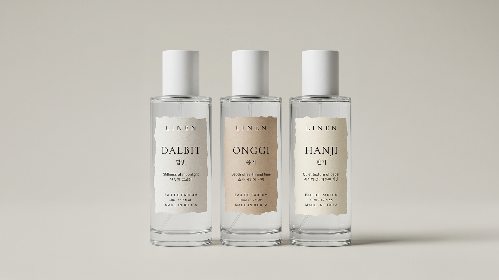
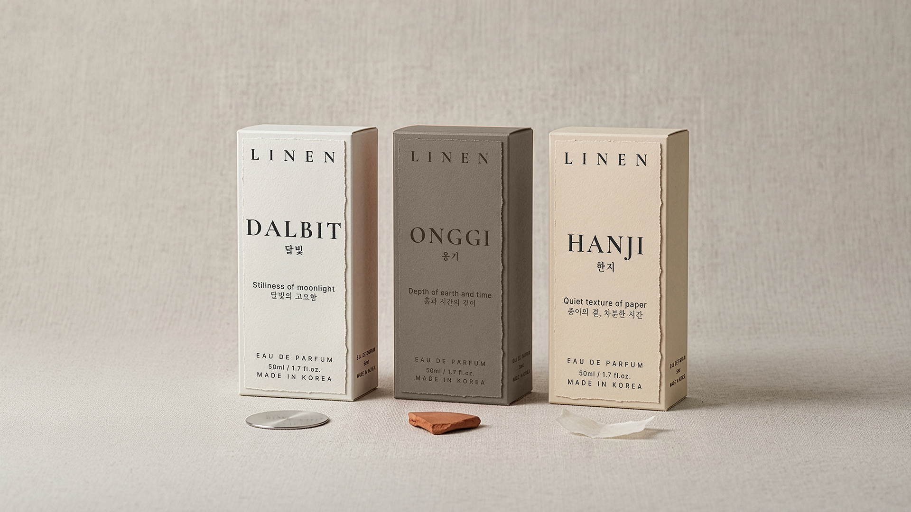
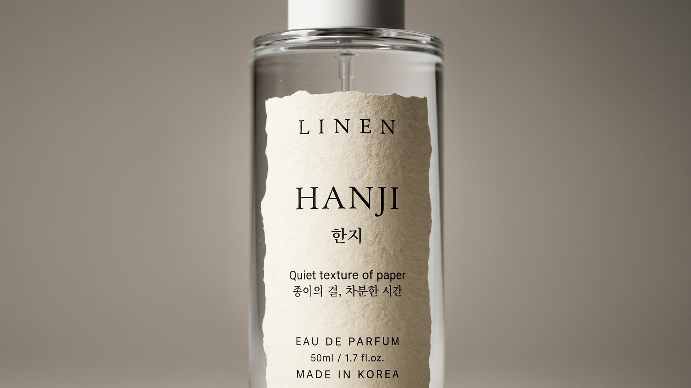

Brand Identity
LINEN은 자연 소재 기반의 라이프스타일 브랜드 아이덴티티 프로젝트입니다.
린넨 특유의 자연스러운 결과 여백의 미를 브랜드 언어로 풀어냈습니다. 로고부터 패키징, 라벨, 제품 용기 디자인까지 일관된 톤으로 연결되는 브랜드 시스템을 구축했으며, 과하지 않은 색채와 절제된 타이포그래피로 브랜드 철학을 표현했습니다.



자연 소재 라이프스타일 브랜드 벤치마킹. 린넨 특유의 텍스처와 여백의 미를 브랜드 언어로 번역할 방법을 탐색했습니다.
로고 및 컬러 팔레트 시스템 구축. 과하지 않은 색채와 절제된 타이포그래피로 브랜드 철학을 표현했습니다.
제품 용기, 라벨, 박스 아이덴티티 확장. 로고에서 시작한 시각 언어가 패키징 전반으로 일관되게 이어지도록 설계했습니다.
실물 제품 시뮬레이션 및 최종 검증. 포토샵 목업으로 실물 완성도를 확인하며 디테일을 다듬었습니다.